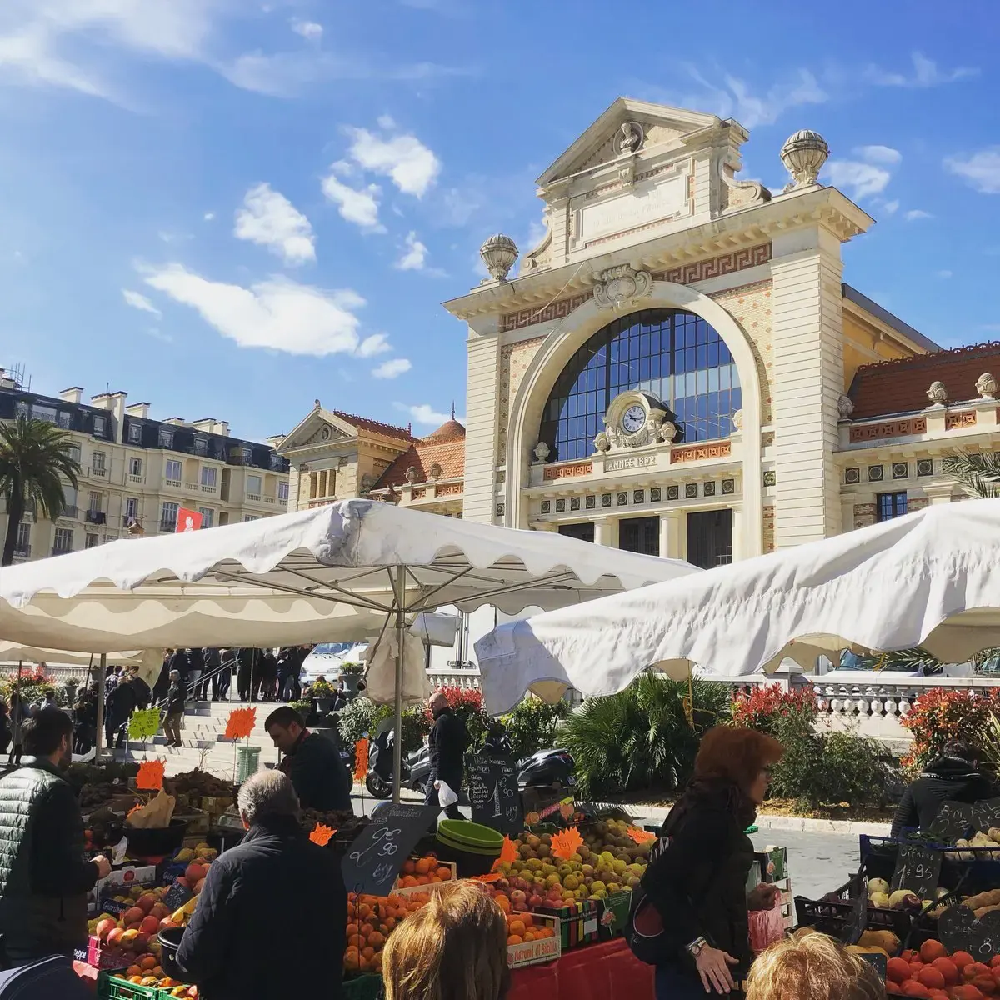

관광·미술관
Nous avons déjà des billets.
이미 표가 있습니다.
누 자봉 데자 데 비예

니스 시내 북쪽 제네랄 드골 광장(Place Général de Gaulle)을 따라 서는 니스 최대 규모의 현지인 생활 시장이다.
관광지화된 쿠르 살레야(Cours Saleya)에 비해 가격이 훨씬 저렴하고 품목이 방대하다. 인근 프로방스 농가에서 갓 수확해 온 유기농 토마토, 허브, 지중해 생선, 수제 치즈, 샤퀴트리가 100여 개가 넘는 가판대를 가득 채운다. 시장 바로 옆에는 19세기 옛 기차역을 개조한 세련된 푸드코트인 가르 뒤 쉬드(Gare du Sud)가 자리 잡고 있다.
관광용 연출이 전혀 없는 니스 시민들의 진짜 아침 풍경이다. 트램 1호선(L1)을 타고 10분 만에 닿을 수 있으며, 신선한 과일 장보기와 가르 뒤 쉬드 푸드홀 구경을 겸한 45~60분의 로컬 라이프스타일 체험으로 훌륭하다.
| 운영시간 | 화–일 06:00–12:30 |
|---|---|
| 휴무 | 월요일 |
| 예약 | 예약 불필요 — 시가 관리하는 개방형 노천시장 |
| 소요시간 | 45–60분 재확인 |
| 항목 | 상세 정보 |
|---|---|
| 위치 | Place du Général de Gaulle, 06100 Nice |
| 운영 시간 | 화–일 06:00–12:30/13:00 (월요일 휴무 / 무료 입장) |
| 가르 뒤 쉬드 | 화–일 11:00–23:00 (푸드홀 운영) |
| 접근 교통 | 트램 1호선(L1) Libération 정거장 하차 바로 앞 |
1892년 프로방스 철도의 종착역으로 지어진 유서 깊은 역사 건물이다. 구스타브 에펠의 공방에서 제작한 웅장한 금속 프레임 구조물이 보존되어 있으며, 현재는 세계 각국의 길거리 음식과 바가 입점한 트렌디한 미식 공간으로 변모했다.
Nous avons déjà des billets.
이미 표가 있습니다.
누 자봉 데자 데 비예
On peut prendre des photos ?
사진 찍어도 되나요?
옹 푀 프랑드르 데 포토
Où commence la visite ?
관람은 어디서 시작하나요?
우 코망스 라 비지트

국제영화제의 상징 크루아제트 대로와 호화 요트 항구, 그리고 11세기 중세 어촌의 원형 르 쉬케 언덕이 공존하는 코트다쥐르의 영화 도시.

해발 92m 바위 절벽 위에서 천사의 만(Baie des Anges)과 구시가지, 림피아 항구를 360도 파노라마로 굽어보는 니스 최고의 천연 전망 공원.

지중해 꽃과 프로방스 제철 식재료, 그리고 갓 구워낸 니스 전통 소카(Socca)를 맛보는 유서 깊은 야외 시장 광장.

지중해로 60m 솟아오른 천연 바위 절벽 위에 조성된 모나코 대공국의 역사적 심장부이자 왕궁 마을.

크루아제트의 화려함 뒤에 숨겨진 11세기 옛 어촌의 가파른 돌계단 골목과 정상 성당에서 바라보는 칸 만의 파노라마.

칸 주민들의 부엌이자 지중해 해산물, 프로방스 과일, 꽃, 치즈가 가득한 1934년 유서 깊은 철골 재래시장.